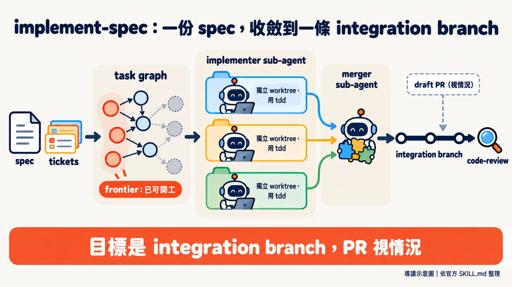
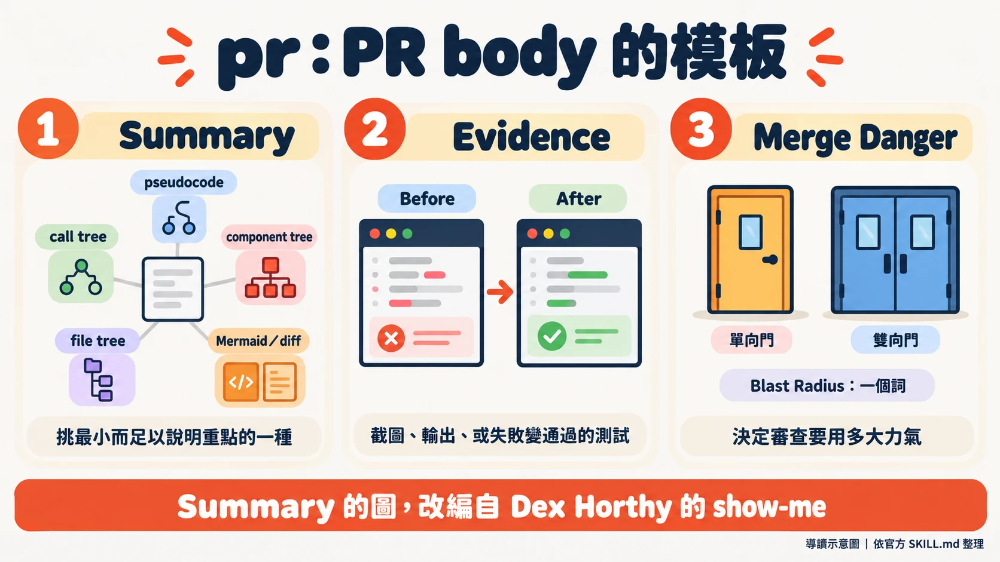
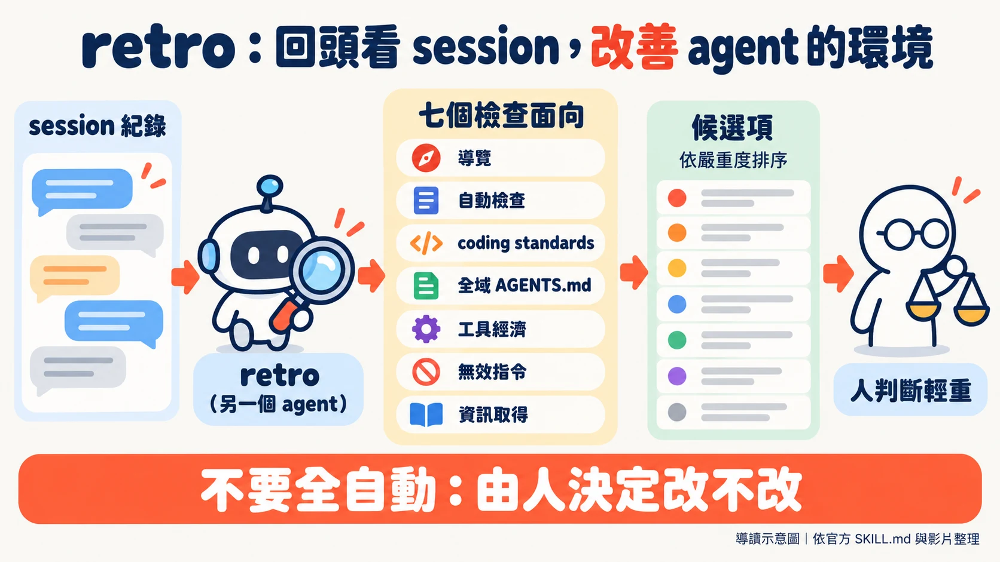

Matt Pocock 在影片後半段，把新做好的 /retro 對準自己的一個 repo 跑。清單最上面的發現是：他的 agent 查出 1.3.0 這個 release 為什麼缺漏，接著沒有先問他，就直接發了一個（00:11:19）。他說這件事他不太在意，隨時可以再切新的 release（00:12:41）。
編者讀這支影片，覺得三個新 skill 都落在同一個環節：agent 做完事情之後，人要怎麼接手。implement-spec 收斂一大批 ticket 的成果，pr 決定交給人審的時候看到什麼，retro 則是做完之後再叫另一個 agent 回頭檢討。這是編者的讀法，講者沒有這樣總結；glossary 更名不在這條線上。
這篇怎麼讀：除特別標明外，文中的做法與看法都是 Matt 在影片裡的自述，官方 repo 的內容會標明。時間點可跳到影片對應位置（取自字幕檔，可能略有出入）。逐字稿是自動轉寫，專有名詞已校正。影片結尾他推薦自己在 aihero.dev 開的 AI coding 課程（00:14:12），這是商業利益，請留意。
這是誰的 skill，這次發了什麼
Matt Pocock 的 GitHub 個人頁自述是「TypeScript wizard」，正在做 Total TypeScript（一門 TypeScript 課程），曾任職 Vercel 與 Stately。他的 skills repo 副標是「Skills for Real Engineers. Straight from my .agents directory.」，也就是他自己平常給 coding agent 用的 skill 直接公開。
官方 release 列表上，v1.3.0 發在 2026 年 10 月 4 日，影片隔天上線。三個 skill 一次「畢業」進 Engineering 分類：implement-spec、pr、retro。另外還有 CONTEXT.md 改名為 GLOSSARY.md 的更動。
一、implement-spec：誰來顧那個迴圈
Matt 處理大工作的方式分兩層：一份 spec 說明要去哪裡，一組 ticket 把路線切成能在單一 coding agent 裡跑完的小段。全塞給同一個 agent，會進入他說的 dumb zone，可能碰到 auto compact。他承認 auto compact 愈來愈好，但還是覺得拆 ticket 比較乾淨（00:00:54）。
ticket 切好之後，誰負責一張一張派出去？他列了三種做法，這裡整理成表（編者整理，並非講者原圖）：
| 做法 | 誰顧迴圈 | Matt 的評價 |
|---|---|---|
| 手動 loop | 使用者本人：做 ticket 1、等、清 context、再做 ticket 2 | 自己像個 for loop，"not really workable"（00:01:40） |
| deterministic loop | 一支腳本，逐張讀 ticket 並呼叫 implement | 每次跑法一致、可靠、便宜，他推薦大多數人用這個；但設定複雜、要很有耐心調整，他認為超出初學者範圍（00:01:49） |
| implement-spec | 一個 agent 當協調者，用 sub-agent 實作每張 ticket | 他想給初學者一個折衷：由 agent 代替人顧迴圈。他說這比 deterministic loop 差，因為不是每次都一樣；但是進入 AFK（人離開鍵盤）工作流程的好起點（00:03:08） |
第三種做法能成立，他說是因為最近才變得可行：sub-agent 現在也能再生 sub-agent，以前有點被削弱，現在能力與協調者相當（00:02:47）。這是他的說法。
官方 SKILL.md 的核心概念是，ticket 不是一串步驟，是帶有阻塞關係的 task graph，因此隨時有一批「已經可以開工」的 ticket（官方稱為 frontier）。流程共九步：
- 讀 spec 與 ticket，弄清楚 task graph。
- 可選：派探索 sub-agent 事先查資料，筆記存在 repo 之外。
- 建 integration branch。
- 每張 ticket 交給 implementer sub-agent，各自在獨立的 worktree 與分支，用
tdd實作。 - 做完的由 merger sub-agent 併入 integration branch。
- frontier 有變，就再派新的 implementer。
- 全部完成後對 integration branch 跑
code-review，由單一 sub-agent 修掉問題。 - 有 draft PR 就標為 ready for review；沒有就依 tracker 的方式結案，回報分支。
- 清掉所有 worktree。
這個 skill 要使用者手動呼叫，不會被模型自動觸發。

有一處口述和官方不同。Matt 在影片裡說，最後會得到「一個 PR」，並把它標成 ready for review（00:04:18）。官方文件現在寫的是，目標是單一 integration branch：issue tracker 靠 PR 結案、或使用者要求時，才在第一次 merge 後開 draft PR；沒有 PR，就依 tracker 的方式結案並回報分支。v1.3.0 的 release 說明直接寫著 "The goal is now the integration branch, not a PR"。使用時以官方文件為準。
他最後補了兩句。這個 skill 他用的頻率比預期高，尤其在還沒建好 deterministic script、沒把「軟體工廠」調好的專案上（00:04:23）。而它只是一個基本版本，stacked PR 之類的做法都可以自己換（00:04:41）。
二、pr：先給圖，再給證據，最後標風險
Matt 認為，PR 仍然是工作進入 main 的主要瓶頸，所以 pr 這個 skill 的目標是讓人類審查盡可能輕鬆（00:05:28）。skill 本身只做一件事：提供 PR body 的模板。
官方 SKILL.md 的模板只有三個標題，Merge Danger 底下再分兩個欄位：
- Summary：用「最小而足以說明重點的呈現方式」。邏輯用 pseudocode，執行流程用 call tree，介面結構用 component tree，大範圍重構用淺層 file tree，另可用 Mermaid 或 diff。這個選單改編自 Dex Horthy 的
show-me，CREDITS.md 說明是「幾乎逐字」複製進來，Matt 在影片裡也說自己是 Dex 的粉絲（00:05:02）。 - Evidence：改動前後的對照，可以是截圖、輸出、或從失敗變成通過的測試。
- Merge Danger：Door 欄位標出這個 PR 是單向門還是雙向門，可附說明；Blast Radius 欄位官方要求用一個詞形容，另可補充可能的後果。

Matt 說 Evidence 是學會信任 agent 輸出的關鍵（00:05:55）。他的觀察是，要求 agent 拿出證據，常常讓它多跑一次測試，或在環境允許時多截一張圖，帶回執行期的資訊，證明改動真的在做它以為自己在做的事。不要求的話，agent 很容易回一句「這應該行，因為我讀過程式碼了」（00:06:15）。他接著說，自己愈來愈著迷於「驗證」這件事，尤其是最近和 Lauren（Lauren Tan，即 Poteto）的那場訪談之後（00:06:22）。那場訪談影片在這裡。
門的比喻用來決定審查要用多大力氣。雙向門是能輕易退回的改動；單向門會對外界造成影響，例如刪資料，或還原代價很高。Blast radius 小的雙向門，他說真的不必審得太用力。他還說，這一段放在 PR 底部，大概是審查的人第一或第二個會看的東西，所以很重要（00:06:59）。
他展示了自己 repo 裡一個由這個 skill 產生的 PR：把兩個本質相同的演算法合併成一個（00:07:16）。PR 裡有刪除與新增的檔案、呼叫關係，以及一個真實案例的前後對照：改動前沒有開場介紹，改動後有，這也是他要的行為變更（00:07:30）。Merge danger 標為雙向門，blast radius 小。
這個 skill 是模型自動觸發的類型。Matt 說它是他見過最穩定被自動呼叫的 skill 之一，至少在 Opus 5.5 上，似乎每次都會觸發（00:07:59）。這是他個人的使用觀察，其他模型或環境未必如此。他的建議很直接：已經有自己的 PR body skill，也可以從這個偷點東西走。
三、CONTEXT.md 改名 GLOSSARY.md
domain-modeling 這類 skill 原本寫入 CONTEXT.md，名字來自 DDD 的 bounded context 概念，靈感源自 Eric Evans 的《Domain-Driven Design》。Matt 說他現在不太走 DDD 那套流程，實際上仍在用，只是不掛名。而 context 這個詞太籠統：不容易讓 agent 在對的時機把它讀進來，對使用者也很混淆。加上檔案裡的內容最後只剩詞彙表，所以乾脆叫詞彙表（00:08:25）。
官方 release 說明列得比影片細：改名不只 CONTEXT.md，連 CONTEXT-MAP.md 也改為 GLOSSARY-MAP.md，而且檔名是大寫的 GLOSSARY.md；影響到 domain-modeling、grill-with-docs、tdd、triage、pr 等多個 skill。已有舊檔的人，必須自己 git mv 成新名稱，因為 skill 之後只找 GLOSSARY.md。Matt 在影片裡也提醒，很多 skill 靠這個檔案才能用對的領域語言，所以一定要更新（00:09:19）。順帶一提，前面的 pr skill 就規定要用 GLOSSARY.md 裡的使用者領域語言寫 PR。
四、retro：叫另一個 agent 回頭看這一個
retro 的起點，是他覺得自己的 skill 組合把太多工作丟給使用者：維護 AGENTS.md、維護 skill、讓 repo 省 token、讓環境對 agent 安全、設好 lint 與導覽（00:09:46）。他自己平常就在替 repo 做這些事，於是把它包成一個 skill。retro 是 retrospective 的簡稱，可以對目前的 session、前一個、或一批 session 執行。官方文件說明，它建議改善的是 agent 的工作環境，不是程式碼本身。
讀真實 session 的好處，他說是能看到 agent 自己可能迴避不談的低效（00:10:51）。他在畫面上秀出 André Staltz（@andrestaltz）10 月 4 日的一則貼文（00:10:56）：/retro 是 game changer，自己的 agent 其實撞上各種沒被察覺的問題，但靠著 agentic cleverness and persistence，功能還是以某種方式做出來了，現在他可以從可靠的基礎重新出發。Matt 認為，agent 不像它該有的那樣會抱怨，也不會試著修自己的錯，所以得另找一個 agent 回頭看那些 session。
官方 SKILL.md 列出七個檢查面向：
- 導覽：agent 找檔案花多久、有沒有隱藏的相依。
- 自動檢查：能不能用 lint、型別、測試抓到錯誤。
- coding standards：要不要給審查 agent 新規則。
- 全域
AGENTS.md的健康度。 - 工具經濟：有沒有昂貴的呼叫，或耗 token 的自製工具。
- 無效指令：steering 檔案裡不影響行為的句子。
- 資訊取得：agent 缺不缺關鍵資訊。
對機械性的違規，官方建議優先建立 deterministic 檢查（linter 規則、pre-commit hook、CI），CODING_STANDARDS.md 只留給真正要判斷的事。完全沒有 guardrail 的 repo，本身就算一項發現。

Matt 在自己專案跑出來的結果，影片裡唸了這幾項（00:11:19 起）：
- 開頭那個 release：agent 在使用者選定修法之前，就執行了不可逆的公開動作。
- repo 裡有 pnpm check 腳本，但沒有任何東西去執行它，建議加 CI。
- 長 session 經過 compaction 後 context 遺失；他用 animatic 做影片草稿，建議把重複的指令搬進 animatic skill。這條他說一定會做。
- 他為課程影片管理系統做的自製 CLI 浪費 token，另一個
wikiCLI 不在本機 PATH 上。
關於 release 那條，影片裡有個細節和現況對不上。Matt 說，現在去看 release 列表，只有 1.3.1，沒有 1.3.0（00:11:30）。但本文撰寫時，官方 release 列表同時有 v1.3.0 與 v1.3.1，時間只差約一分鐘，v1.3.1 多了一條針對 ask-matt 的修正。逐字稿沒有說明原因。
retro 把開頭那個 release 列為最嚴重，他自己判斷其實沒那麼糟，所以 retro 的設計是讓人參與判斷（human in the loop）。他說大家看了都想自動化（00:12:54），他的原話是「No, you don't want to automate this」。理由是自動化會讓 agent 陷入一個迴圈：不斷找出誤報，不斷試著修，最後把 repo 與 agent 帶往不該去的方向（00:12:58）。他建議的用法是抽樣：想到好一陣子沒跑，就挑幾個最近的 session，特別是出過怪事的那幾個（00:13:16）。
這個「不要自動化」是他本人的建議；官方 SKILL.md 的最後一步是「依嚴重度把候選項呈現給使用者」，沒有任何字句禁止自動化。他還說，定期跑 retro 之後，自己的 token 效率與產出品質都大幅提升（00:14:04），沒有附數據。
重點結論與實際啟示
以下是編者整理，依據都來自上面各節，不是講者的原話。
- 想試 implement-spec：先確認自己有 spec 和 ticket（官方說明它接在
/to-spec與/to-tickets之後），並設好 issue tracker；沒設的話，skill 會叫你先跑/setup-matt-pocock-skills。預期成果是一條 integration branch，PR 是視情況才有。 - 不想碰整套 skill：
pr的模板可以單獨借走，Summary、Evidence、Merge Danger（含 Blast Radius）這三段，用在自己的 PR 範本裡也成立。 - 用到 glossary 的 skill：升級後檢查舊的
CONTEXT.md與CONTEXT-MAP.md，用git mv改成大寫的新名稱，否則 skill 找不到。 - 跑 retro：定期抽樣來跑，不要全自動；清單出來由人判斷輕重，像 Matt 對 release 那條的取捨。
來源清單
- 影片：New Skills! v1.3 brings /pr, /implement-spec, and /retro（Matt Pocock 頻道，2026-10-05，14:34）。
- 官方 repo：mattpocock/skills
- 講者背景：GitHub：mattpocock（2026-10-05 讀取，講者自述）。
- Lauren Tan 與 Poteto 的對應：訪談影片，以及 pstack 的 plugin.json（作者欄為 Lauren Tan）。
- Dex Horthy 的
show-me：見上方pr/CREDITS.md的說明。 - André Staltz 的貼文：取自影片畫面（2026-10-04 12:28 PM），本文未另在 X 上開啟原貼文。
- 以上官方內容皆於 2026-10-05 讀取；repo 之後可能再變動。